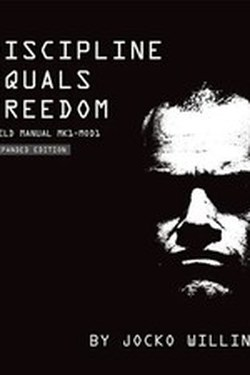

Library › Self-Improvement
Discipline Equals Freedom — Summary & Key Lessons

The ex-Navy SEAL's blunt case: discipline is not the opposite of freedom — it is the only path to it.
📖 OPEN THE FULL INTERACTIVE BREAKDOWN →🌐 Read it in Hindi, Hinglish, Gujarati, Tamil & 22 more languages — free, with audio.
💡 The Big Idea
Jocko's core equation: discipline = freedom. Most people think discipline is constraint; he argues it is the removal of constraint — the discipline to train, to wake, to say no, to eat clean, frees you from weakness, excuses and regret. His book is a training manual of short chapters: workout templates, morning protocols, mental toughness drills, and the relentless instruction to take ownership of everything in your life — because there is no one else to blame.
🧠 The 5 Key Lessons
Lesson 1: Start with the Morning
Part 1: The Morning
Jocko's day begins before dawn: wake, train, prepare. The argument is not about hours — it is about winning the first decision. If you win the morning against your own weakness, the rest of the day is downhill discipline. The alarm is not an enemy; it is the first test of the day, and the test must be passed.
📖 Example: The moment you hit snooze, the day's decision has already been made for you — by weakness. Read the full example →
⚡ Do this: Set the alarm, put it across the room, and stand up within 10 seconds of it ringing.
Lesson 2: The Workout as Mind Gym
Part 2: The Training
Physical training is not vanity; it is the daily proof that you can make yourself do what you do not feel like doing. That proof transfers everywhere — to the hard email, the hard conversation, the hard choice. Jocko's favourite exercises are brutal but short: pushups, pullups, squats, sprints — no gym required.
📖 Example: Ten sets of pullups with a timer beat the perfect gym plan you skip. Read the full example →
⚡ Do this: Pick 15 minutes of bodyweight training and execute it at the same time daily, no negotiation.
Lesson 3: The 3% Rule
Part 3: Growth
Jocko's counter to perfectionism: aim for 3% better per month, not overnight transformation. Small, consistent gains compound; the obsession with the big jump kills the small step. His law: be better than yesterday — not than everyone else. The competitive frame is against your own past self.
📖 Example: Adding one page of reading daily is a 3% move; aiming for a book a week collapses by day three. Read the full example →
⚡ Do this: Write your 3% this month: one habit, one skill, one physical metric — and track it.
Lesson 4: Detach from Outcomes, Own the Process... and Everything Else
Part 4: Ownership
The SEAL creed: extreme ownership — no excuses, no blaming the boss, the weather or the economy. At the same time, Jocko insists on detaching from results you cannot control: do the work, accept the outcome. 'Detach and yet remain committed' is the paradoxical core: full ownership of effort, surrender of outcome.
📖 Example: A trader who owns his process but not the market's verdict stays rational in both directions. Read the full example →
⚡ Do this: For one problem this week, rewrite every excuse as an ownable action — then take it.
Lesson 5: The Dark Side Is Part of the Deal
Part 5: The Warrior's Path
Jocko is honest about the costs: the discipline that brings freedom is loneliness, friction, and a permanent war with comfort. He also names the shadow — the same intensity that wins wars can wreck relationships if ungoverned. His rule: the warrior path demands strength with restraint; hard on self, open to others.
📖 Example: The most decisive leaders are usually also the most courteous — the discipline cuts both directions. Read the full example →
⚡ Do this: One act of restraint today (choose patience over force) to keep the sharp edge safe.
✅ 5-Step Action Plan
- Alarm across the room; stand within 10 seconds.
- 15 minutes of bodyweight training, same time daily.
- Set the 3% target for this month and track it.
- Convert one excuse into one ownable action.
- Pair every hard act with one deliberate act of gentleness.
⚠️ When This Doesn't Work
Jocko's world is hyper-masculine, war-framed and occasionally simplistic; the advice is excellent for output and risky for rest, relationships and health when applied absolutely. Take the discipline; negotiate the dosage.
💀 The Graveyard Proves It
📷 Johnny Manziel — The First-Round Talent Who Didn't Study the Playbook. Burn: An NFL career in 2 years Read the full case study →
💬 Best Quotes from Discipline Equals Freedom
- “Discipline equals freedom.”
- “There are two paths: the path of discipline and the path of regret.”
- “Don't let the voice in your head win. You are stronger than that.”
Interactive version: mark lessons as read, listen in your language, share quote cards.